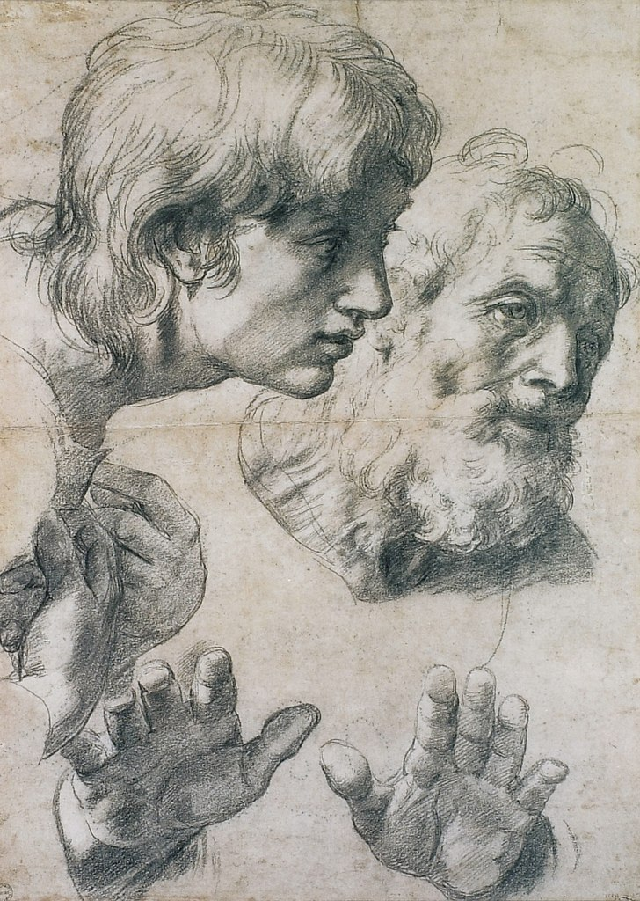
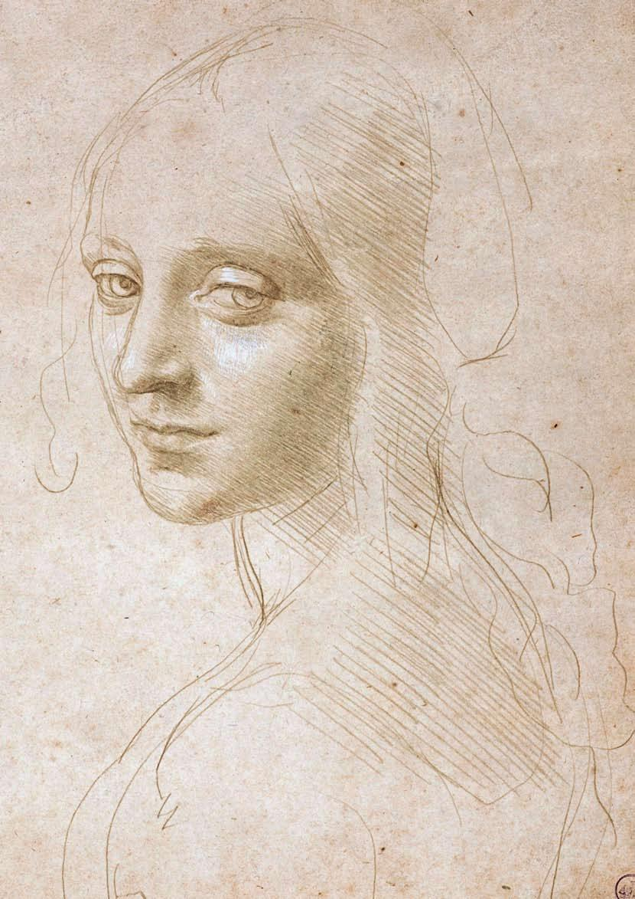

Рису́нок (через польск. rysowac из ср.-в.-нем. rizen — резать, чертить) — изображение на плоскости, созданное графическими средствами.
Рисунок — структурная основа зрительно воспринимаемой формы. Основа зрительного образа воспринимаемого объекта. В этом значении термин «рисунок» близок понятию абрис, контур, очерк. Художник раннего итальянского Возрождения Пьеро делла Франческа в «Трактате о живописной перспективе» (ок. 1482 г.) писал: «Под рисунком разумеем мы профили и очертания, кои заключаются в вещи».
Однако рисунок есть не только «очертание», но также представление конструкции предмета в его трёхмерных качествах. Рисунок как структурный образ наблюдаемого объекта складывается в сознании рисующего ещё до начала изобразительного процесса, и поэтому он несёт в себе рациональное, интеллектуальное начало.
Рисование в изобразительном искусстве является структурной основой графической, живописной, скульптурной и архитектурной форм. Знанием рисунка (конструкции объекта) опосредуется зрительное восприятие внешней поверхности формы, поэтому мы воспринимаем объект не только как он видится, но действительно существующим в пространстве. К примеру, если мы видим круг, то благодаря логически-осязательному восприятию можем увидеть его шаром. Наблюдая сочетания квадратов, можем представить их в качестве куба в пространстве. В таком интеллектуальном восприятии структурные линии объекта создают представление направленности формы. Реализовать такое представление можно различным образом: в зарисовке непосредственно с натуры, наброске, этюде, подготовительном эскизе композиции для живописи, скульптуры, поисковом эскизировании в процессе архитектурного и дизайнерского проектирования.
Рисование также представляет собой отдельный вид изобразительного искусства, разновидность графики. Его история восходит к глубокой древности. Академическая история изобразительного искусства как правило начинается с изобретения рисунка. Иносказательно, имея в виду структурообразующую силу рисунка, мы говорим о рисунке музыкальной композиции и даже о рисунке поэтического текста.
Первые рисунки – это всем известные странные, и поначалу непонятные наброски, иероглифы, начерченные на стенах пещер и скал. Именно в те времена, когда человек еще не был современным, а только начинал к этому путь. Эти первые рисунки были нарисованы, а если быть точнее – то нашкрябаны на чем-либо, имеющим твердую и устойчивую поверхность.
Также, были установлены специальные даты, говорящие о том, что человек стал рисовать наскальные рисунки за 10 тысяч лет до нашей эры. Это были именно наскальные рисунки. Естественно, были произведены нужные раскопки и экспедиции.
Однако только в эпоху итальянского Возрождения художники смогли выработать изысканную технику изображения на бумаге. Одной из причин, по которой искусство рисунка в этот период достигло подобных вершин, было то обстоятельство, что оно было напрямую связано с великой профессией художника. И скульптор, и живописец занимали тогда заметное место в обществе, и у хороших мастеров постоянно была работа.
 Художники Возрождения, такие как Микеланджело (1475-1564), чтобы справиться со всеми заказами, нанимали многочисленных помощников и возглавляли больше мастерские. К сожалению, большая часть подготовительных набросков, которые эти художники выполняли для своих картин и которые сегодня мы считали бы чрезвычайно ценными, уничтожались по окончании основной работы.
Также, хорошо известны истории о портретных рисунках. Это очень интересная часть в истории рисунка, так как содержит в себе много известных фамилий, таких как Ватто, Джованни Баттиста Тьеполо и другие. Именно эти фамилии внесли просто незабываемый вклад в историю рисунка, да и вообще в историю целиком. Портретный рисунок впервые стал так известен и популярен только в 18в. Это время прославилось своими необычными творениями. Люди стали по-другому воспринимать свое лицо, а значит, и красоту в целом. Джованни Баттист Тьеполо прославился как художник, увлекающийся именно таким рисунком. Он умел несколькими штрихами закончить свое искусство, но сделать это так, что просто потом невозможно забыть.